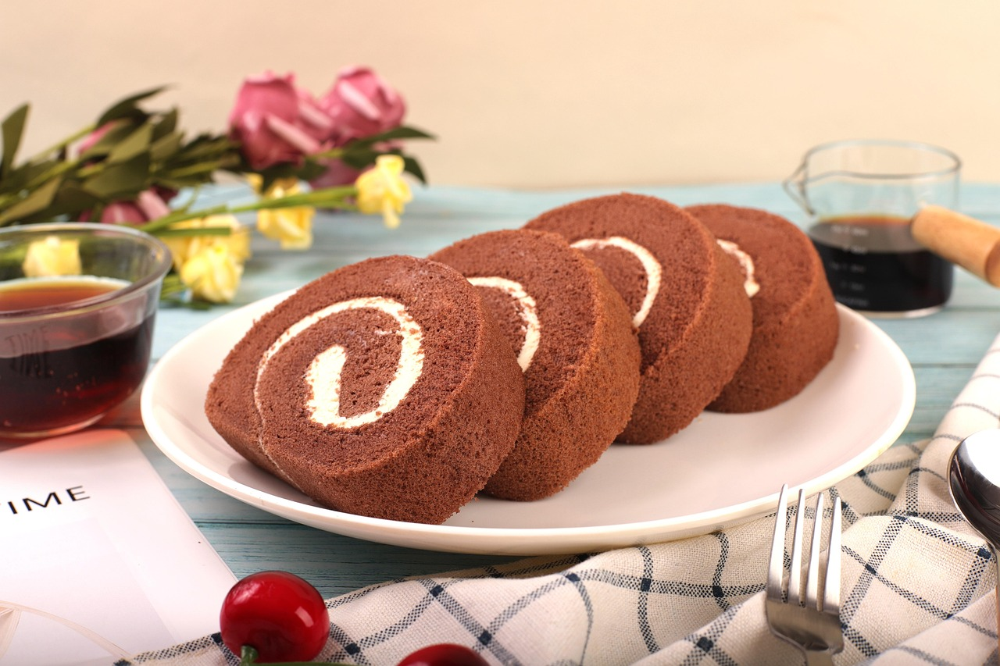
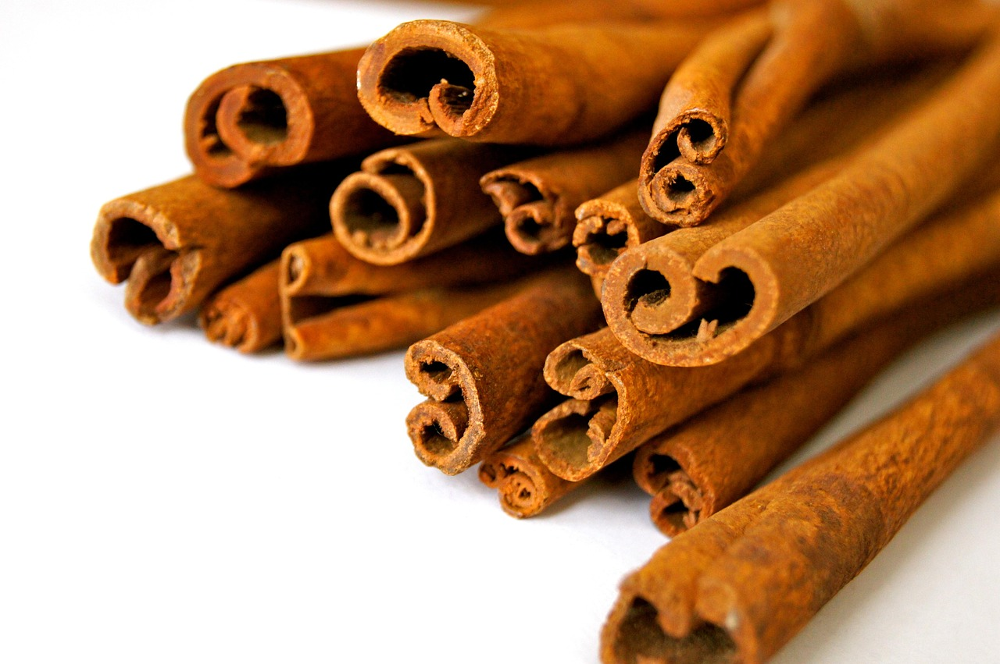
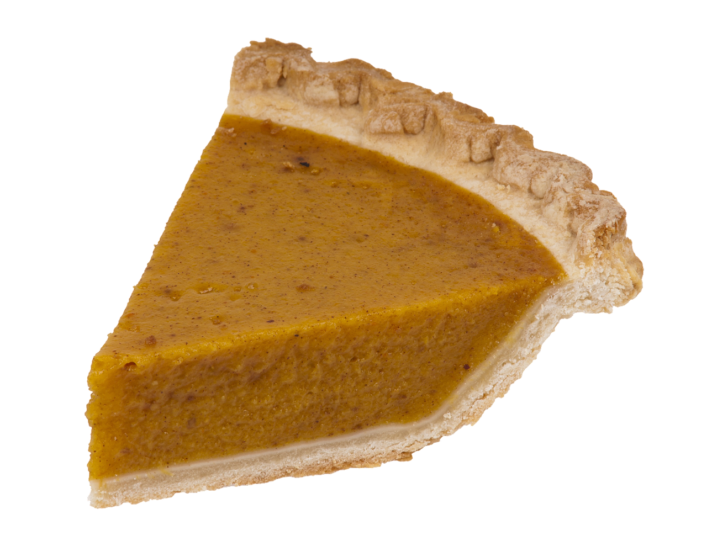
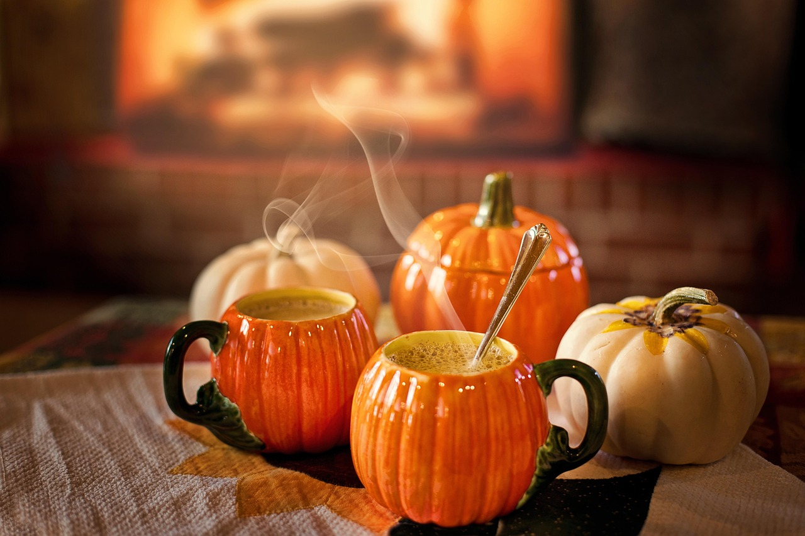

Peter Dukes, the original creator of Starbucks' Pumpkin Spice Latte. (Image from CBS News)
The Starbucks logo; the company that originally launched the Pumpkin Spice Latte.

A swiss roll, one of the pastries pumpkin spice was made into.
History
The official origin of the Pumpkin Spice Latte isn’t known to many.
According to The Daily Meal, Starbucks worker and director of espresso
Peter Dukes was believed to be the inventor of the Pumpkin Spice Latte
when it launched in 2003. However, he wasn’t the first to create
pumpkin-coffee mixtures. The first instance of pumpkin-flavored drinks
originates to the 1600s, based on an article titled, “A Description of
the New Netherlands” by Adriaen van der Donck, which mentions unnamed
people attempting to make beverages from pumpkins. In the 1930s,
McCormick had already tried to make its first blend of pumpkin spice
coffee, consisting of cloves, cinnamon, ginger, and nutmeg. Soon after,
they began mass-producing various spices in 1934, causing an uprising in
pumpkin and pumpkin spice foods, like cupcakes, cake rolls, and other
pastries and foods. Sometime in 1980, it was suggested in the Montreal
Gazette to use pumpkin spice as a substitute for sugar. This set off an
experimentation era of pumpkin spice and coffee, leading to Starbucks
releasing its first-ever version of the Pumpkin Spice Latte in 2003.
Ever since its release, Starbucks has made changes to its latte. There
was controversy because it originally didn’t contain pumpkin; it had
pumpkin spice sauce, which was artificial. However, the sauce recipe was
changed to include pumpkin puree, along with water, sugar, and other
spices, like cinnamon and nutmeg. The recipe has changed a lot since
then, evolving into the latte it is today, and inspiring other people
and coffee chains.

Cinnamon is one of the many vital ingredients in PSLs.

One of the spices used in PSLs is something called "pumpkin pie spice". It's featured in the recipe on the "How to Make" page.

PSLs originally didn't have pumpkin in them, but now they contain something called "pumpkin puree".